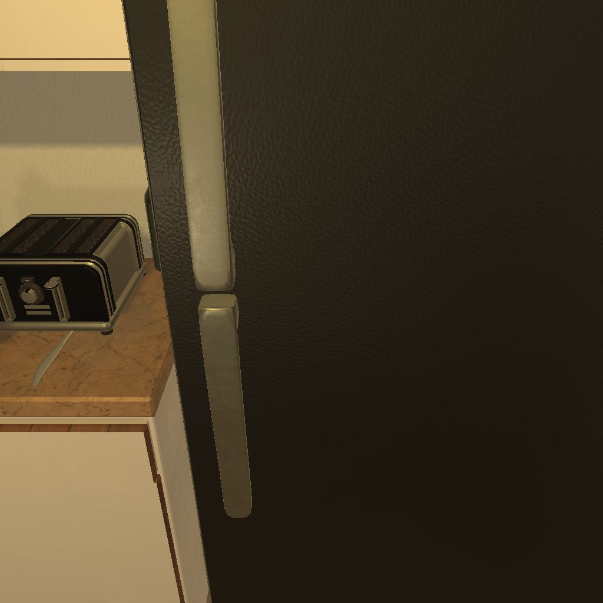

---------------------------------------------------------task: 14---------------------------------------------------------
--------------------------------------------------------------------------------------------------------------------------------------------------------------------
--------------------------------------------------------------------------------------------------------------------------------------------------------------------
Step:--------------------------------------------------------------------------12-------------------------------------------------------------------------------
----------------------------------------
VLM Prompt:
Image1:
**Instruction**
1. Analyze the provided image to identify all visible household objects, focusing on those relevant to the task description "cool some apple and put it in countertop."
2. Use the analysis of the image and the task hint "The agent must find an object of the desired type, pick it up, go to a fridge, cool the object with the fridge, then find the correct location to place it, and put it down there. The agent does not need to use the fridge button or open the fridge to cool the object, and the agent just needs to do action that is "cool the object with the fridge"." to answer the question: what is the most reasonable action in the choices for the task description "cool some apple and put it in countertop"?
4. Decide and write the answer using the template: The answer is: (i): , where i is the real number. If there is no desired object in the image, search every place based on **Initial Observation** to find the object. And if no one is exactly correct, choose a similar answer.
**Initial Observation**
You are in the middle of a room. Looking quickly around you, you can see microwave (1), countertop (1-2), cabinet (1-11), diningtable (1), drawer (1-3), sink (1), sinkbasin (1), toaster (1), stoveburner (1-4), fridge (1), coffeemachine (1), garbagecan (1)
**Answer Choices**
(1): go to microwave 1
(2): go to diningtable 1
(3): go to drawer 1
(4): go to sink 1
(5): go to cabinet 2
(6): go to cabinet 3
(7): go to sinkbasin 1
(8): go to cabinet 4
(9): go to cabinet 5
(10): go to drawer 2
(11): go to countertop 2
(12): go to toaster 1
(13): go to cabinet 6
(14): go to stoveburner 1
(15): go to cabinet 7
(16): go to stoveburner 2
(17): go to stoveburner 3
(18): go to stoveburner 4
(19): go to drawer 3
(20): go to cabinet 8
(21): go to cabinet 9
(22): go to cabinet 10
(23): go to coffeemachine 1
(24): go to cabinet 11
(25): go to garbagecan 1
(26): open fridge 1
(27): close fridge 1
(28): examine fridge 1
**Answer**
Let's think step by step by following the instructions.
----------------------------------------
----------------------------------------
Original Response:
The task is to "cool some apple and put it in countertop." From the initial observation, we know that there is a fridge in the room. The task hint tells us that the agent must go to a fridge to cool the object and then find the correct location to place it. We are also told that the agent does not need to use the fridge button or open the fridge to cool the object, which means interacting directly with the fridge is not necessary for this task.
Analyzing the image, we can see the corner of a fridge on the left side, a countertop in front, and a toaster on the countertop. There are no visible apples or any other objects that are relevant to the task description in the image provided. Therefore, we need to search every place based on the initial observation to find the object (apple).
Since the image only shows us a partial view of the room and the fridge is partially visible, we must assume that the apple may be located elsewhere in the room, possibly in a cabinet or on the countertop.
Given the answer choices, the most reasonable action to take for the task description is to go to the countertop, as it is where the agent will ultimately need to put the cooled apple. However, we don't know which countertop the apple may be on, so we will choose the one that is visible in the image, which is countertop 2.
The answer is: (11): go to countertop 2.
----------------------------------------
----------------------------------------
>>> Refine Original VLM Response and Get Pure Action: go to countertop 2
----------------------------------------
-----------------------------------------------------------------
Running time: 10.373257637023926 seconds
Total Money: 4.49427
-----------------------------------------------------------------
-----------------------------------------------------------------
Text Observation:You arrive at loc 12. On the countertop 2, you see a pan 1, a winebottle 2, a winebottle 1, a saltshaker 2, a apple 1, a stoveknob 1, a stoveknob 2, and a butterknife 1.
-----------------------------------------------------------------
UNSUCCEED